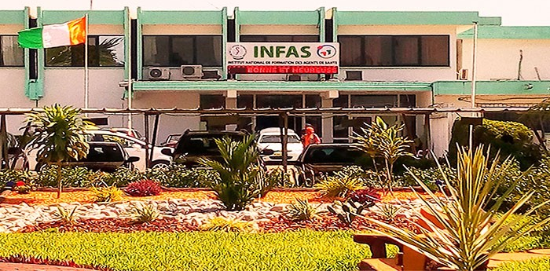

Bienvenue au marché de gastronomie de l'INFAS en ligne appelez nous au numéro suivant +225 0102165641 ou écrivez nous sur whatsapp ci dessous
whatsapp
Nos dabalis
Attiéké avec poulet braisé 1000f
RESTAURANT ESPACE ROUME SITUE AU PLATEAU PRES DE la MATCA